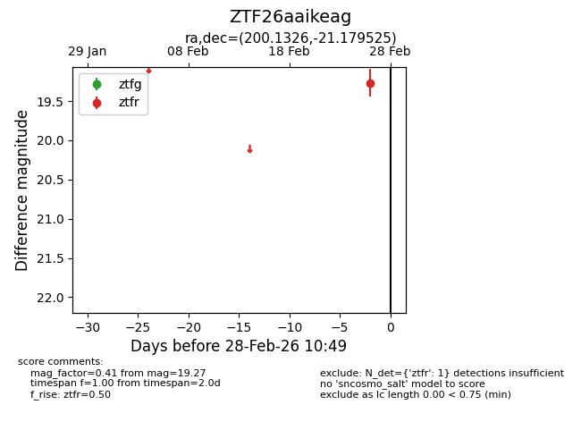
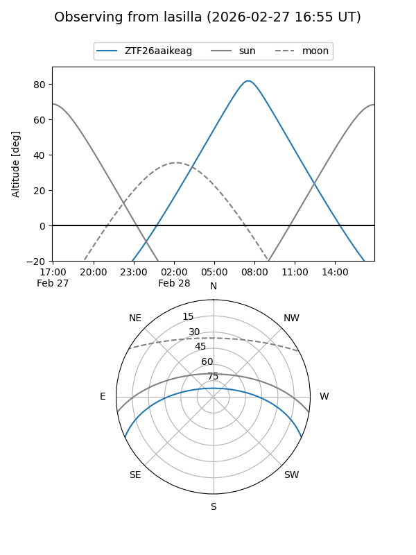
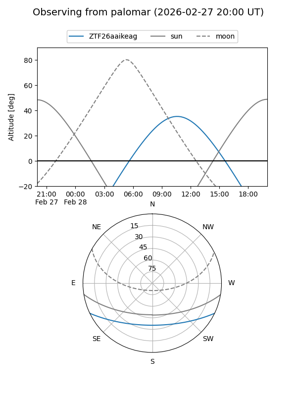

ZTF26aaikeag
Target ZTF26aaikeag at 2026-02-28 10:50
Aliases and brokers:
FINK: link
Lasair: link
ALeRCE: link
alt names
ZTF26aaikeag (ztf,fink_ztf)
Coordinates:
equatorial (ra, dec) = 200.1326,-21.17953
equatorial (HMS+DMS) = 13:20:31.83,-21:10:46.29
galactic (l, b) = (311.9560,+41.18190)
Flags:
Photometry:
last ztfr=19.27
1 ztfr detections
Lightcurve

Visibility


Additional plots